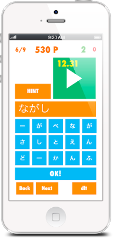
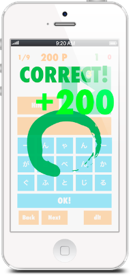
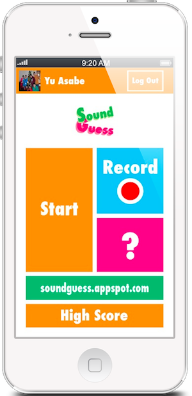
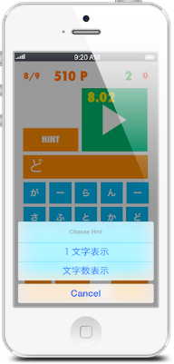
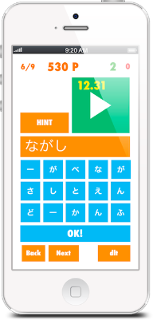
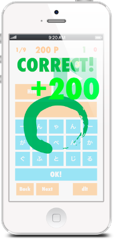
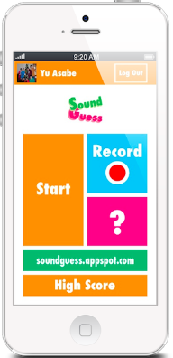
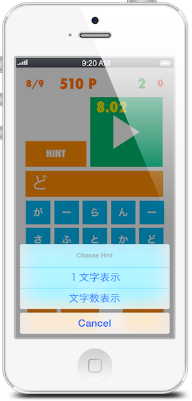

Home
About
Awards
Contact
See on the App Store >
(外部リンク)
アプリ開発を始めて一年も経たないY.A.がつくった音クイズゲーム『Sound Guess』が見事優勝。ユーザーに登録してもらった音をクイズとして出し、何の音なのか文字入力して当てるというゲームアプリである。音はクラウド上で保存されていて、Facebookなどを通じて共有することもできる。


 







-192x401.png)
ⓒ 2014 Shibumaku HS Computer Club. All Rights Reserved.